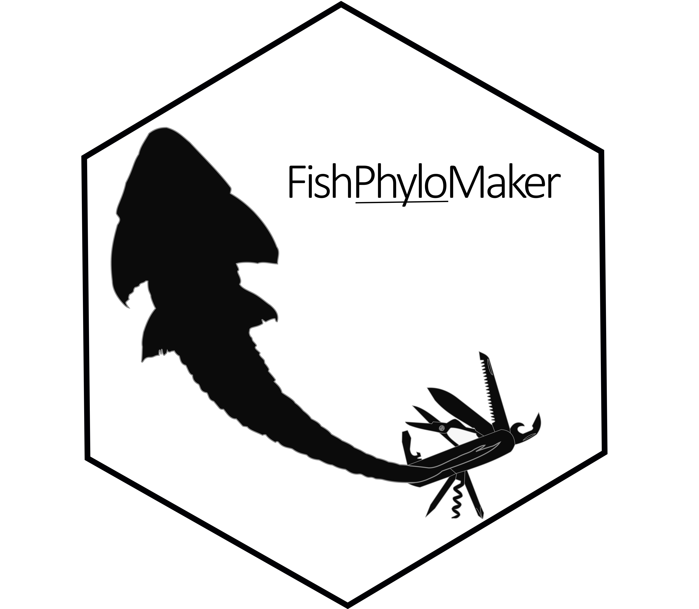

Making phylogenies for a local pool of fish species
{FishPhyloMaker} is an R package that has two main functions, FishTaxaMaker and FishPhyloMaker. The first generate a data frame from fish species names provided by the user, checking the validity of these names and possible synonyms by using the information presented in Fishbase database through the package rfishbase . Species that were not found in Fishbase are printed in the command line, and the user must inform manually the Family and the Order of these species. The output of FishTaxaMaker() function is a list containing the following objects:
- All_info_fishbase: A data frame containing the taxonomic classification of valid species accordingy to Fishbase;
-
Taxon_data_FishPhyloMaker: A data frame with three colum containing the valid name of species (s), its family (f) and order (o). This data frame can be used in
FishPhyloMaker()to generate the phylogeny; - Duplicated_species: A data frame showing the names of species that the user provided and the names of species valid accordingly fishbase. This data frame contains only those species that represents duplicated species
- Species_not_in_Fishbase: A character vectorn containing the names of species that was not find in Fishbase with a valid name data frame object containing three columns with the name of species (s), the Family (f) and the Order (o) of all species provided by the user.
Besides to help checking the validity of the names of species, its synonyms and duplicated species, the data frame returned by FishTaxaMaker() in Taxon_data_FishPhyoMaker are formatted to be directly used in the core function FishPhyloMaker(). This function will use the information of the taxonomic hierarchy contained in the data frame returned from FishTaxaMaker(), joint with the information present in the the fishtree of life project to assemble the phylogenetic tree with the species informed by the user.
FishPhyloMaker() works in a sequential way, with 4 levels of insertions. First the function finds for all species of local data that are already presented in the mega-tree. If any species remains for insertion, then the function finds for congeneric species that are already present in tree. If any, the congeneric species are added to the tree as a sister species of the respective genus by dividing the branch of congeneric species by two and inserting the new species. If there are more than one congeneric species in the tree the species will be added as a polytomy at the node that corresponds to the most recent ancestral (MRCA) that links all congeneric species. This round of insertion is what we call Congeneric insertion.
After congeneric species insertions, if there are species that already must be inserted in the tree, FishPhyloMaker() finds for the all the genus in the tree that are of the same family of the species that must be inserted. This comprises the Family level round of insertions. In this round, the user has three different insertion options:
Insert the species near to a specific genus/family: To insert the species near to a specific genus/family, the user must type the name of the genus (or family) at which the species must be inserted;
Insert the species between two genus/families: To insert the species between two different genus/families, the user must type the names of the two genus/families separated by a blank space;
Insert at the root of the family/order: To insert the species at the node that corresponds to the family (or order), the user must type the name of the family.
The user chooses one of these three options through an interactive procedure, in which all the genus of the same family of the species that must be inserted, and are already present in tree, are printed in the console. The user must type the name of a given genus for the first option, the name of two genus separated by a blank space for the second option and the name of the family for the third option.
After all species with representative Genus of their families be inserted, if any species remains to be inserted in the tree, the function found for all families present in the tree that are of the same Order of the species that must be inserted, and an interactive procedure similar of that described previously for the family level is performed, but, instead to choose among Genus, one of the three options must be chosen by typing the families inside a given Order (or the name of the Order in the case to insert at the node that unites all families inside a given Order). This level of insertion is called Order insertion level. If any species remains to be inserted after these three levels, the function will inform the user that the species was not inserted in the tree. We adopt this decision since the insertions beyond Order will carry a lot of uncertainty regarding the phylogenetic position of this species.
Another point that is important to mention is that at each level of insertion a check procedure is performed to check if any genus of the species that must be inserted was included in the tree. If this occur the species will be automatically inserted following the same procedure described in the Congeneric level of insertions, and the species added in this level we call Congeneric family level
The last step consists in subset the tree to maintain only those species of interesting of the user. This is done by dropping all species that are not present at the names informed by the user. This returns a dated phylogenetic tree, and, optionally, a data frame with the same format of that the user obtained with FishTaxaMaker(), but with a new column indicating at which level the species was added in the procedure with the following code.
- Present_in_tree the species was already present in the original tree;
- Congeneric_insertion species inserted as a sister species of the same genus presented in the tree;
- Congeneric_insertion_roundFamily species inserted as a sister species of the same genus presented in the tree, but that were added after a species of local pool of the same genus be inserted in the tree;
- Family_insertion if not found any congeneric species, the species will be inserted near to, or between genus of the same family presented in the tree. The user can also insert the species in the base of the family;
- Order_insertion if not found any genus of the same family of the species that must be inserted, the species will be inserted near to a given family, between two families or at the node that corresponds to the Order of this species;
- Not_inserted if species was not inserted in any of the previous steps, it will not be inserted in the final tree;
To obtain a phylogeny of fish species, the user must provide to FishPhyloMaker() function a data frame that present the following format:
| s | f | o |
|---|---|---|
| G_sp1 | Family1 | Order1 |
| G_sp2 | Family2 | Order2 |
| G_sp3 | Family3 | Order3 |
This table can be done manually or by passing to FishTaxaMaker() a list of species or a community data matrix with species names in columns following the format Genus_species.
To install the package the user must type:
devtools::install_github("GabrielNakamura/FishPhyloMaker", ref = "main", build_vignettes = TRUE)To run an example the user can load a data set contained in the package:
library(FishPhyloMaker)
data(neotropical_comm)
data_comm <- neotropical_comm[, -c(1, 2)] # removing latitude and longitudeThis data set comprises the occurrence of 59 fish species that occur in headwater streams of Parana and Paraguai river Basins, in Brazil. The coordinates of these streams are presented in the two first columns of this data set.
First the user must obtain the data necessary to enter in FishPhyloMaker using FishTaxaMaker
taxon_data <- FishTaxaMaker(data_comm, allow.manual.insert = TRUE)
Characidae
Characiformes
Characidae
Characiformes
Characidae
Characiformes
Loricariidae
Siluriformes
Characidae
Characiformes
Cichlidae
Cichliformes
Crenuchidae
Characiformes
Gymnotidae
Gymnotiformes
Loricariidae
Siluriformes
Loricariidae
Siluriformes
Loricariidae
Siluriformes
Loricariidae
Siluriformes
Heptapteridae
Siluriformes
Characidae
Characiformes
Loricariidae
Siluriformes
Characidae
CharaciformesFishTaxaMaker finds in Fishbase for the family and the order of species provided in data argument. If any species was not find in Fishbase, the user will be asked to type the Family and the Order of this species manually. In the case of this data set, species Curculionichthys inseperatus was not found in Fishbase, so we inform manually the family (Loricariidae) and order (Siluriformes) of this species. This function can also be usefull to check possible mispelling errors in the name of species.
Finally run FishPhyloMaker
res_phylo <- FishPhyloMaker(data = taxon_data,
insert.base.node = TRUE,
return.insertions = TRUE,
progress.bar = TRUE)The species are inserted in a sequential procedure. Those species with any congeneric representatives will be printed in the console jointly with a list of Genus in which the user must choose. The user have three options:
- Insert near to a specific Genus, then the user must type the name of this Genus;
- Insert between to Genus, then the user must type the names of these two Genus separated by a white space;
- Insert at the node that correspond to the Family of the species being inserted. Then, the user must type the name of the Family.
The output has two objects, a phylogenetic treefor the local pool of fish species, and can be directly plot
plot(res_phylo$Phylogeny, cex = 0.7)And a data frame indicating at which level the species of local pool was inserted (one of the six categories detailed above).
res_phylo$Insertions_dataFor more details and updates in package functioning see and specific articles showing how to use {FishPhyloMaker} package see FishPhyloMaker web page